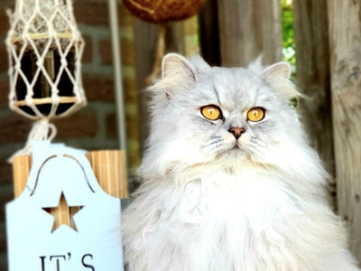

Persian cats are medium-sized, usually weigh between seven and 12 pounds, and measure from 10-15 inches tall. They have a rounded head, small, rounded ears, and big eyes. ... These long-haired cats can come in a multitude of patterns and colors, including white, black, blue, cream, chocolate, and red
 about